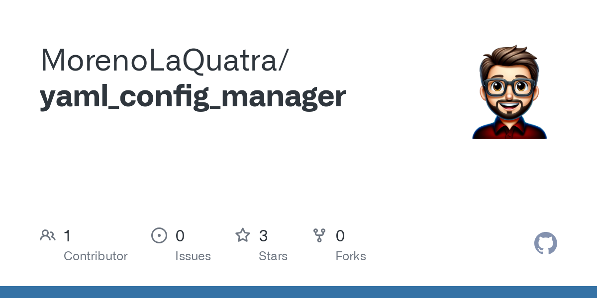
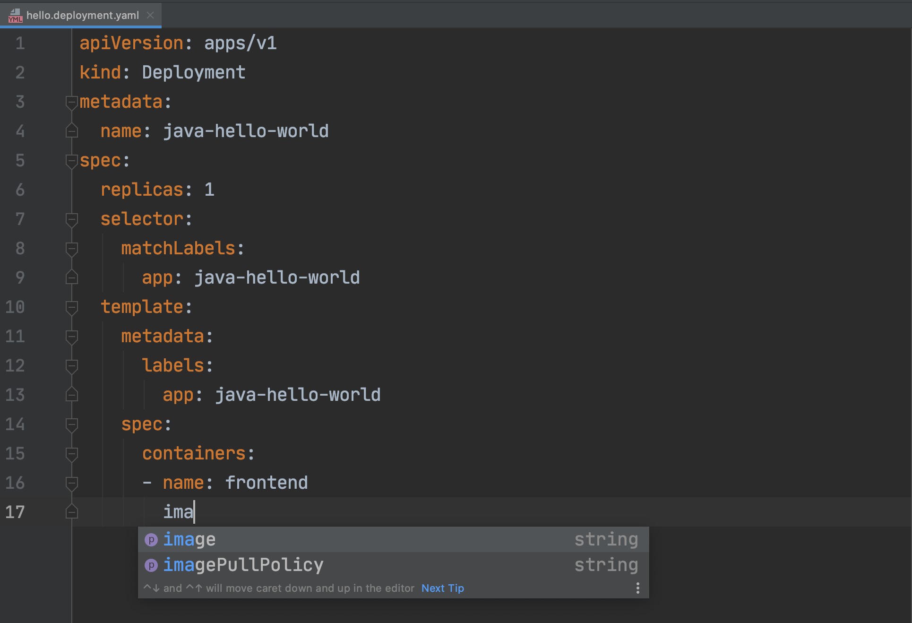

📄 YAML Projects Showcase
Check out some clever YAML-powered projects and tools for configuration, DevOps, and data serialization.



🔥 Top 5 YAML GitHub Repos
- YAML (Official Spec & Tools) — The central hub for YAML’s official tools and specs.
- js-yaml — Fast, pure JavaScript YAML parser and dumper for Node.js.
- bs-api-specification — OpenAPI 3 specification and generation tool for bs-business and bs-web-client projects.
- yamllint — Linter for YAML files to enforce style and syntax consistency.
- Home-Assistant — Home Assistant guides, examples and YAMLs for dashboards, projects and reference purposes.